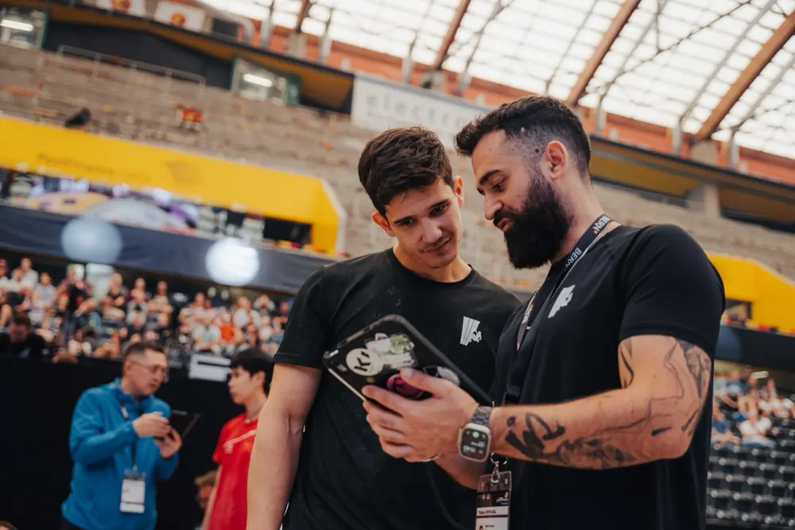
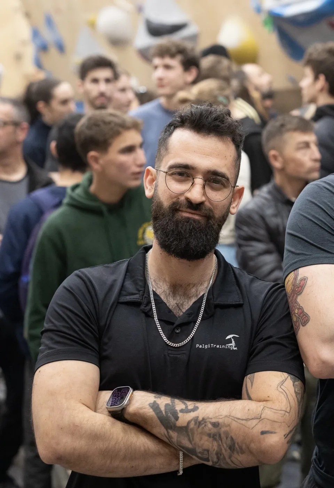
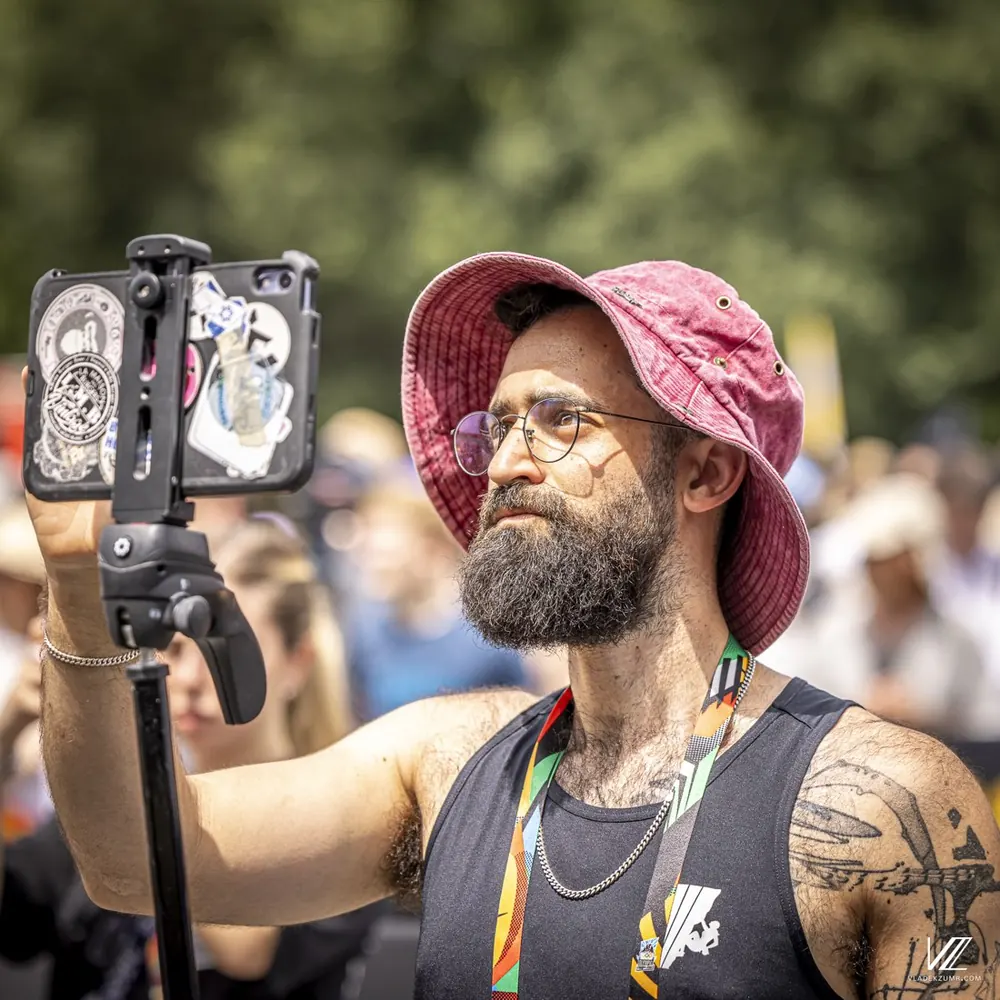
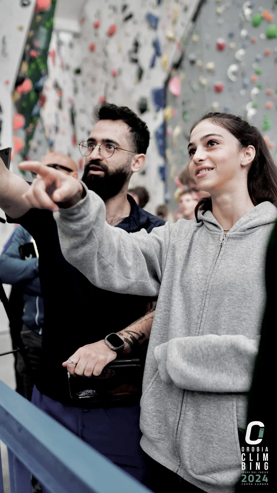
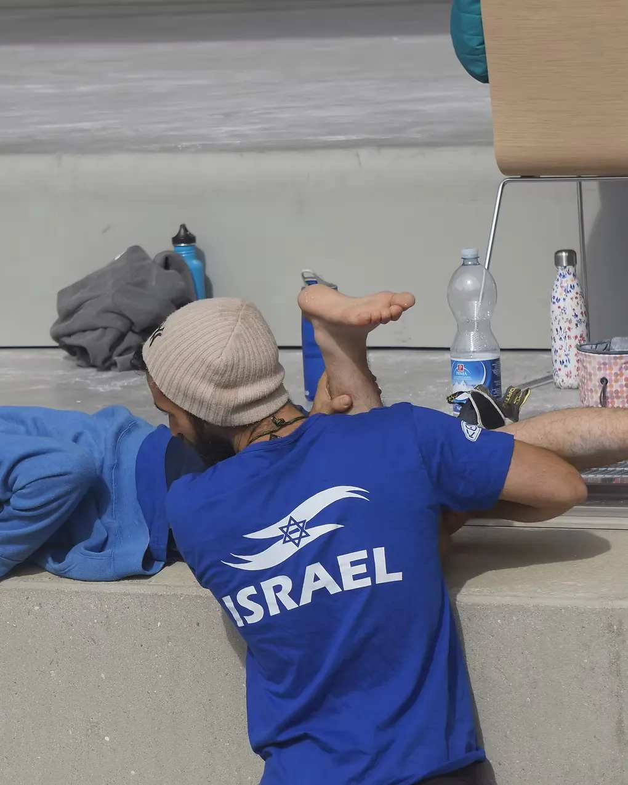
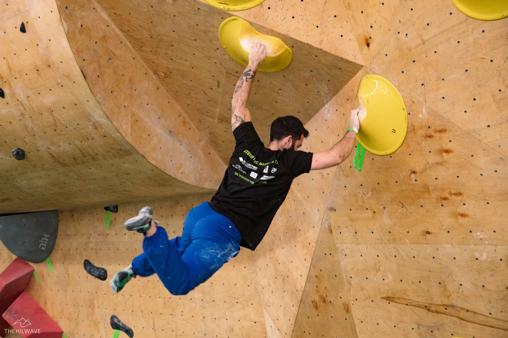

אימון תחרותי
ליווי צמוד שמחבר תכנון עונה, אימונים יומיומיים והכנה מדויקת לתחרויות.
- תכנון עונה סביב תחרויות היעד
- ליווי אישי בתחרויות בארץ ובחו״ל

מאמן טיפוס תחרותי ופיזיותרפיסט
ליווי מקצועי לספורטאיות ולספורטאים, מהאימון הראשון ועד תחרויות בינלאומיות.

אני רועי פלגי, מאמן טיפוס תחרותי, פיזיותרפיסט והמאמן הראשי באקדמיית הטיפוס של וינגייט. אני מאמן ספורטאיות וספורטאים תחרותיים, בהם חברי וחברות נבחרת ישראל, ומלווה אותם באימונים, בבניית תוכניות אישיות ובתחרויות בארץ ובעולם.
אני בונה סביב כל ספורטאי מעטפת מקצועית שמותאמת אליו אישית: תוכנית וקבוצת אימון, מעקב צמוד, ליווי בתחרויות, קשר פתוח עם ההורים, וליווי תזונתי ופסיכולוגי. אני מסתכל על הספורטאי כמכלול, לא רק על מה שקורה על הקיר. הרקע שלי בפיזיותרפיה מאפשר לי לדחוף את הביצועים קדימה, תוך שמירה על גוף בריא לאורך הדרך.
הגישה הזו נשענת על יותר מעשר שנים של ניסיון באימון תחרותי ועל הובלת משלחות ישראליות לתחרויות בינלאומיות כמאמן ראשי.
כולן על אותה שיטה: תוכנית מסודרת, מעקב אמיתי והתאמה אישית.

ליווי צמוד שמחבר תכנון עונה, אימונים יומיומיים והכנה מדויקת לתחרויות.

תוכנית אישית סביב המטרות, הרמה והזמן שלכם, עם קשר רציף. תהליך מובנה, לא קובץ במייל.

שיעור אחד על אחד על הקיר: מפרקים את התנועה, מזהים הרגלים ובונים דפוסים נכונים.

אבחון וטיפול בפציעות טיפוס וספורט, מפיזיותרפיסט שמטפס ומאמן בעצמו.

מוכנים?
חידוד הכושר, טקטיקה וראש שקט לקראת היעד: תחרות, פרויקט או מטרה אישית.